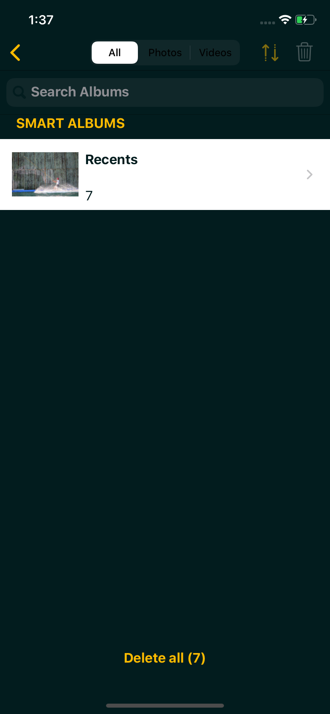
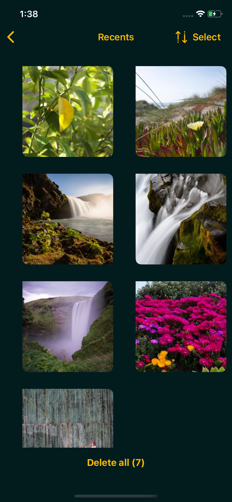
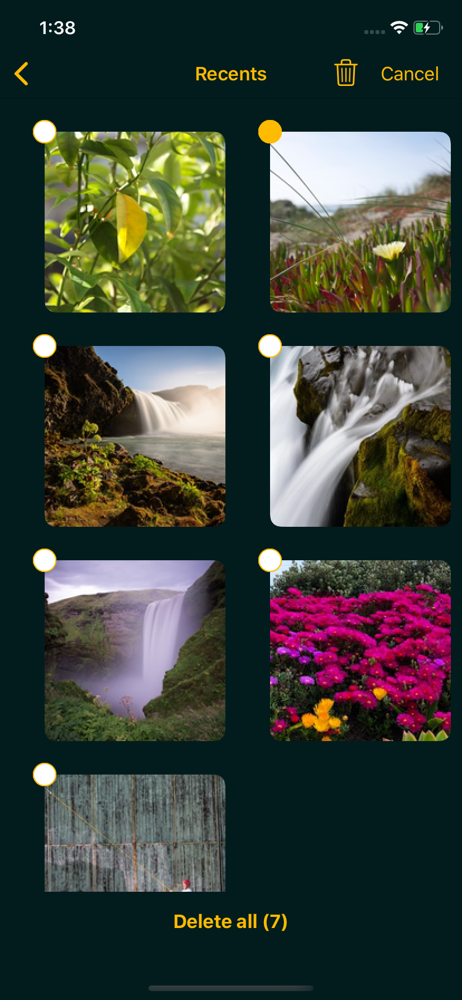
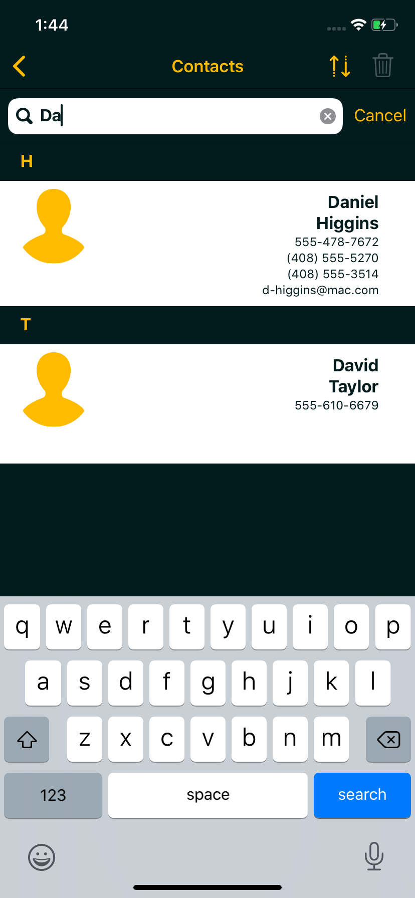

Adios is designed to provide a simple, consistent interface for removing photos, videos, contacts and calendar events from your iOS device. These operations are grouped into three areas, allowing you to focus on one type of record at a time.
To make the process relatively painless, Adios provides the ability to reverse the list and search, making it easier to get to the items you want.
Adios is able to delete either entire albums, through the Album screen.
Or you can view one or more items through the individual album screens
Then select the items you wish to delete
Or preview and delete items from the preview screen.
The contacts screen allows you to scroll and search through all available contacts on your device.
The events screen allows you to scroll and search through all available events on your device. Recurring events support deleting the individual event, or all future events as well.
Reach out at jmillersmart@gmail.com